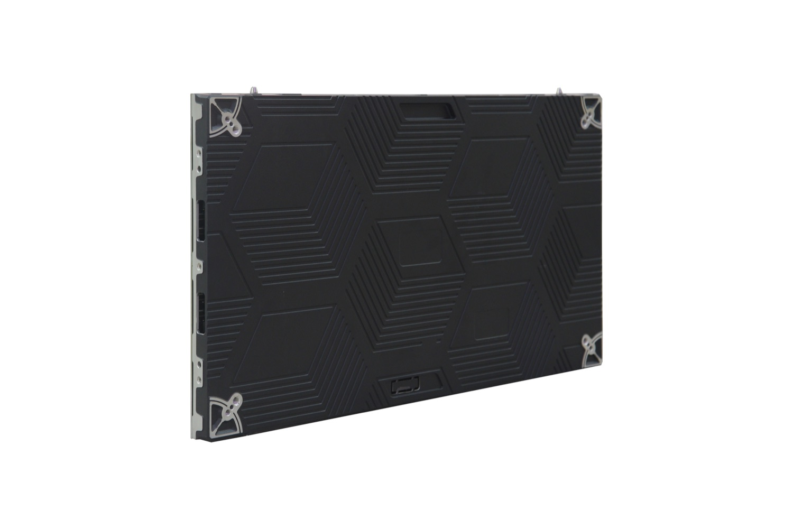
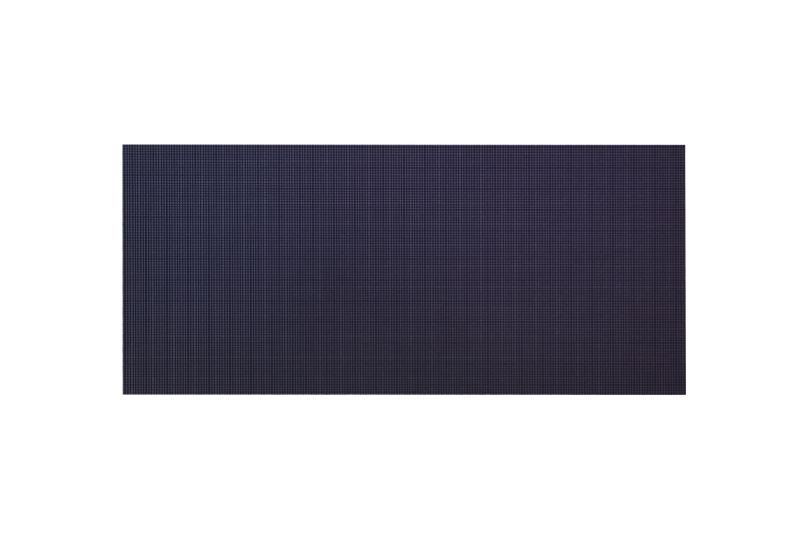

By David
Before a dvLED wall can be installed, the building has to provide four things: a structure that carries the load, a power supply sized for the screen, a service route to every module, and whatever the local building code requires. Each is normally somebody else's responsibility, and the project slips when they are discovered after the equipment has been ordered.
This guide sets out what each requirement involves, so the facilities side of a project can confirm it before an integrator prices the work.
The wall imposes a load on whatever carries it, and the load is more than the weight of the cabinets.
The figure to work from is the cabinet weight plus the mounting system, distributed as the design intends. A wall mounted on a masonry wall, a steel frame or a stud partition is carried differently in each case, and the fixings differ accordingly. Where the wall is hung above an occupied space, the restraint arrangement becomes part of the design rather than an installation detail.
The practical point for a facilities team is that this is settled by an engineer before the equipment is ordered, because a wall built to the wrong assumption cannot be corrected after manufacture.
The screen is an electrical load, and it has two figures: an average draw and a maximum. Both matter, and they do different jobs.
The maximum is what the circuit has to survive at its worst, which is typically a full white image. The average is what the building will actually pay for over the life of the wall. A supply sized on the average will trip when the screen shows a bright full-screen image, which is a sizing failure rather than a product fault.
Two further points belong at this stage. The screen needs a clean supply, and on a site with heavy plant or lifts that may mean a dedicated circuit. And the electrical design should arrive with the screen’s own figures rather than an estimate, because the two are compared at inspection.
Service access is the requirement most often decided by accident, and it is the one that determines the cost of every future repair.
A module replaced from the front of the screen needs no access behind the wall, which in an occupied building is the difference between a one-hour job and a corridor closure booked weeks in advance. A wall that must be serviced from the rear needs a maintained void, and that void has to be designed before the wall is built.
The practical test is to walk the route a technician would use, from the building entrance to the module, and confirm that every door, lift and space on it is available during normal hours.

Where the installation falls under a building code, the wall has to satisfy requirements that are not part of the AV specification.
These commonly include the fire performance of the cabinet materials used in an occupied space, restrictions on what may be installed in a means of egress, and the electrical listing required for equipment permanently installed in a building. The specific requirements depend on the jurisdiction and on where the wall sits in the building.
The requirement is checked at approval, so the certification file has to exist before installation rather than after. Ask for it at the specification stage, because a material that lacks a required rating forces a redesign.

On most projects the responsibilities divide along predictable lines, and writing them down early prevents the argument.
The manufacturer supplies the product, the cut sheet, the dimensioned drawings, the weight and power figures, and the certification file. The integrator designs the mounting, coordinates the power and structure work, installs, and commissions. The building side provides the structure, the supply, the access, and confirms the code position.
The item most often left undefined is the last one — confirming which code applies and who establishes it. On a project with a consultant that sits with the consultant; without one, it frequently falls to nobody until inspection.
| Requirement | Usually provided by |
|---|---|
| Cabinet weight, dimensions, power figures | Manufacturer, with the cut sheet |
| Mounting design and load calculation | Integrator or structural engineer |
| Power circuit and distribution | Building electrical contractor |
| Service access and void | Building, confirmed at design stage |
| Fire and electrical listing | Manufacturer supplies the file; the project confirms the requirement |
| Acceptance test and sign-off | Integrator, witnessed by the owner's representative |
For this requirement our range covers it directly: the COB EF outdoor series the X Series all-platform.
Send your specifications for a detailed LED display price quote with UL/ETL certification.
Request Price Quote Chat on WhatsApp